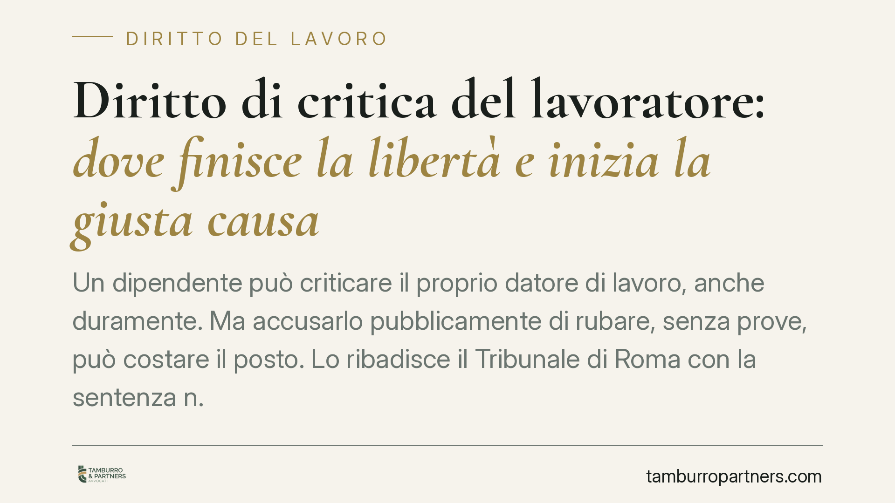

Diritto di critica del lavoratore: dove finisce la libertà e inizia la giusta causa
Un dipendente può criticare il proprio datore di lavoro, anche duramente. Ma accusarlo pubblicamente di rubare, senza prove, può costare il posto. Lo ribadisce il Tribunale di Roma con la sentenza n. 5560/2026, che ha ritenuto legittimo il licenziamento per giusta causa. Il confine tra critica lecita e diffamazione resta il punto decisivo per lavoratori e imprese.

Il caso
Una dipendente aveva accusato pubblicamente l'azienda di "rubare i soldi dei dipendenti". Il datore di lavoro ha reagito con il licenziamento per giusta causa. Il Tribunale di Roma, con la sentenza n. 5560/2026, ha dato ragione all'impresa: l'accusa, infondata e potenzialmente rilevante sul piano penale, ha superato i limiti del diritto di critica.
La decisione non nega il diritto del lavoratore di esprimere dissenso. Ne fissa piuttosto i confini, richiamando un principio consolidato: la libertà di manifestare il pensiero non copre l'attribuzione di fatti falsi e lesivi dell'onore altrui.
Inquadramento normativo
Il licenziamento per giusta causa è disciplinato dall'art. 2119 del Codice civile. La norma consente di recedere dal contratto, senza preavviso, quando si verifica "una causa che non consenta la prosecuzione, anche provvisoria, del rapporto". Si tratta, in altre parole, di un comportamento tanto grave da spezzare in modo irrimediabile il vincolo di fiducia tra le parti.
Il diritto di critica del lavoratore trova invece fondamento nell'art. 21 della Costituzione (libertà di manifestazione del pensiero) e nell'art. 1 dello Statuto dei lavoratori (legge n. 300/1970), che tutela la libertà di opinione anche sui luoghi di lavoro. Questo diritto, però, non è assoluto. La giurisprudenza lo riconosce entro tre limiti: la continenza formale (linguaggio non gratuitamente offensivo), la continenza sostanziale (i fatti riferiti devono essere veri o quantomeno seriamente verificati) e la pertinenza (attinenza a un interesse concreto e apprezzabile).
Quando l'accusa consiste nell'attribuzione di un reato — come il furto ai danni dei dipendenti — senza alcun riscontro, viene meno la continenza sostanziale. La critica scivola nella diffamazione e perde ogni protezione.
Implicazioni pratiche
Per il lavoratore, la lezione è chiara: contestare scelte aziendali, retribuzioni o modalità organizzative è legittimo, purché si resti sul piano del giudizio e non si passi all'accusa di fatti-reato inventati. Definire "ladri" i propri datori di lavoro, in pubblico o sui social, espone a un rischio concreto di licenziamento, oltre alle possibili conseguenze penali per diffamazione.
La forma del messaggio conta. Un conto è affermare che l'azienda "non paga il giusto" o "gestisce male le risorse": si tratta di valutazioni. Altro è dichiarare che "ruba i soldi dei dipendenti": si attribuisce un comportamento penalmente illecito. La differenza non è di sfumatura, ma di sostanza giuridica.
Per l'impresa, la sentenza conferma che il vincolo fiduciario può legittimamente venire meno di fronte ad accuse gravi e infondate diffuse all'esterno. Resta però necessaria la prova della falsità dell'addebito e della sua gravità, oltre al rispetto della procedura disciplinare prevista dall'art. 7 dello Statuto dei lavoratori. Un licenziamento adottato senza contestazione formale o senza istruttoria adeguata rischia di essere annullato, a prescindere dal merito.
Particolare attenzione va prestata alle esternazioni sui social network. La diffusione pubblica amplifica il potenziale lesivo e viene valutata dai giudici come aggravante rispetto a un confronto riservato in azienda.
Cosa fare in concreto
- Documenta prima di parlare. Se ritieni che l'azienda commetta irregolarità, raccogli riscontri concreti e valuta i canali corretti (segnalazione interna, whistleblowing, denuncia).
- Distingui critica e accusa. Esprimi giudizi e opinioni, evita di attribuire reati specifici senza prove: la differenza è decisiva sul piano legale.
- Datore di lavoro: rispetta la procedura. Prima del licenziamento, avvia la contestazione disciplinare scritta e concedi i termini a difesa previsti dall'art. 7 dello Statuto.
- Conserva le evidenze. Screenshot, testimonianze e cronologia delle affermazioni sono elementi utili in un eventuale giudizio, per entrambe le parti.
- Consigliamo una valutazione preventiva. Prima di agire — con una segnalazione o con un provvedimento disciplinare — verifica con un legale la solidità della posizione.
Un principio di equilibrio
La sentenza del Tribunale di Roma non comprime il dissenso: lo colloca entro binari precisi. Il lavoratore conserva pieno diritto di criticare, anche con toni aspri. Ciò che non gli è consentito è trasformare la critica in un'accusa infamante e falsa. È su questo confine, spesso sottile, che si gioca la legittimità di un licenziamento.
---
*Contributo informativo a cura di Tamburro & Partners - Avv. Giuseppe Tamburro. Non costituisce parere legale.*
Ogni storia di lavoro ha i suoi tempi.
Se gestisci HR e vuoi un confronto su contenzioso, ispezioni o licenziamenti, scrivi allo studio. Ti rispondiamo entro un giorno lavorativo.